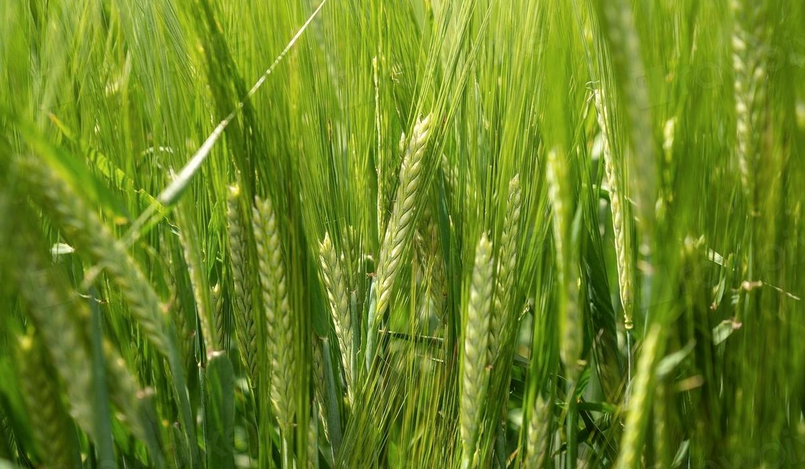

Has your brewing liquor changed under you this season?
Source water moves with the seasons. If your salt additions do not move with it, your mash chemistry drifts while the recipe card stays the same.

The recipe did not change. The water did
Most breweries treat water as a fixed input. The analysis was done when the plant was commissioned, the salt additions were set and the recipe card has not changed since. Meanwhile the borewell level drops through the dry months, the municipal supply switches source after the rains and the bicarbonate in your incoming water moves by tens of milligrams per litre.
The brewer usually notices it sideways. Mash pH creeps up. Run-off slows. A pale lager picks up a touch of colour and a harsher bitterness that the tasting panel calls astringent. The water report on the wall still says what it said two years ago.
The question is whether your incoming liquor has shifted enough this season to need a different treatment. The honest answer needs a time series, not a single analysis.
What to measure and how often
You need regular analyses of raw incoming water and of treated brewing liquor, logged with a date and the source. Monthly is a minimum. Weekly through a monsoon changeover is better. The ions that matter for the mash are bicarbonate (from total alkalinity), calcium and magnesium. Track sodium, chloride, sulphate, iron and nitrate as well, because they move for the same reasons and some of them carry flavour or safety limits.
Alongside the water, log what you added: salt and acid doses per brew. Without the additions you cannot tell whether a change in mash pH came from the source or from the dosing.
The single number that tells you most about the mash is residual alkalinity, the bicarbonate that is left after calcium and magnesium have done their acidifying work.
RA (mg/L as CaCO3) = HCO3 x 50/61 - Ca x 50/20/3.5 - Mg x 50/12.2/7All ions in mg/L. Divide by 17.85 to express RA in German degrees (dH).
For a 12 Plato wort, a change of 10 dH in residual alkalinity moves knock-out wort pH by about 0.3, in the opposite direction. That is the Kolbach rule of thumb and it is why a few degrees matter.
A worked example
Say a brewery on borewell water sees these two analyses six months apart:
| mg/L | After the rains | Peak dry season |
|---|---|---|
| Bicarbonate (HCO3) | 180 | 250 |
| Calcium | 45 | 60 |
| Magnesium | 10 | 15 |
| RA as CaCO3 | 109.5 | 153.3 |
| RA in dH | 6.1 | 8.6 |
Calcium went up too, which helps, but bicarbonate rose faster. Residual alkalinity climbed by about 2.5 dH. By Kolbach that is roughly 0.07 pH units higher in a 12 Plato wort if the treatment stays the same. Small on paper. Enough to shift extract, colour pick-up and the character of the bitterness across a season of brews.
The point is not the exact pH. It is that the same acid dose now buys a different result and nothing in the brew sheet tells you so.
The traps
- Annual analyses. One report a year will always sit in the wrong season. You cannot see a seasonal shift with one point per year.
- Testing the treated water only. If the treatment plant compensates partly, the treated result hides how hard it is working. Test both sides.
- Mixed sources. Many sites blend borewell and municipal supply in a varying ratio. Record the blend, or the analysis describes a water you never brewed with.
- Alkalinity titrated carelessly. Total alkalinity to pH 4.4 is easy to overshoot. A sloppy endpoint looks like a seasonal shift.
- Units. Bicarbonate as HCO3 and alkalinity as CaCO3 are not the same number. Mixing them silently inflates RA by about a fifth.
What good looks like
Good is a control chart per ion with the season visible on it and a residual alkalinity line that the brewer checks before changing anything else when mash pH moves. Treatment rules are written against RA bands, not against a fixed dose, so the dose follows the water. When the source changes, the record shows it before the beer does.
Beer365 holds the water analyses, the salt additions and the brew outcomes in one record, reads them from the lab and process systems you already run and answers the question with the analyses and batches it used.
Part of the Beer365 solution for raw materials and recipe.

Written by Ankur Napa
R&D brewer at United Breweries, SABMiller and AB InBev, then a data scientist on AI and generative AI for AB InBev's global business units. MSc Brewing Science and Technology, MSc Data Science and AI, Microsoft Certified Fabric Analytics Engineer. He leads Beer365 at Disruptive Advantage.
+91 7755 909445 · ankur.napa@disruptive-advantage.com
Ankur on LinkedIn · Talk to Ankur
Keep reading
More on raw materials and recipe
 Raw materials and recipe
Raw materials and recipeIs your malt supplier's certificate telling the truth?
A certificate of analysis is a claim, not a measurement you took. Pair every COA with your own lab result and the gap starts to show up in money.
Raw materials and recipeIs your wort feeding the yeast properly?
Free amino nitrogen is the yeast's food supply. A FAN figure on its own tells you little. Paired with the fermentation curve it explains slow ferments, diacetyl and ester swings.
Raw materials and recipeWhat does this beer cost to brew today, not last quarter?
Standard costs are set once a year and malt prices move every month. A live cost per hectolitre uses today's prices and the losses you actually had.
Bring one week of brew sheets
We will show you where the beer went, on a call, before anyone signs anything.
Or talk to Ankur directly: +91 7755 909445 · ankur.napa@disruptive-advantage.com